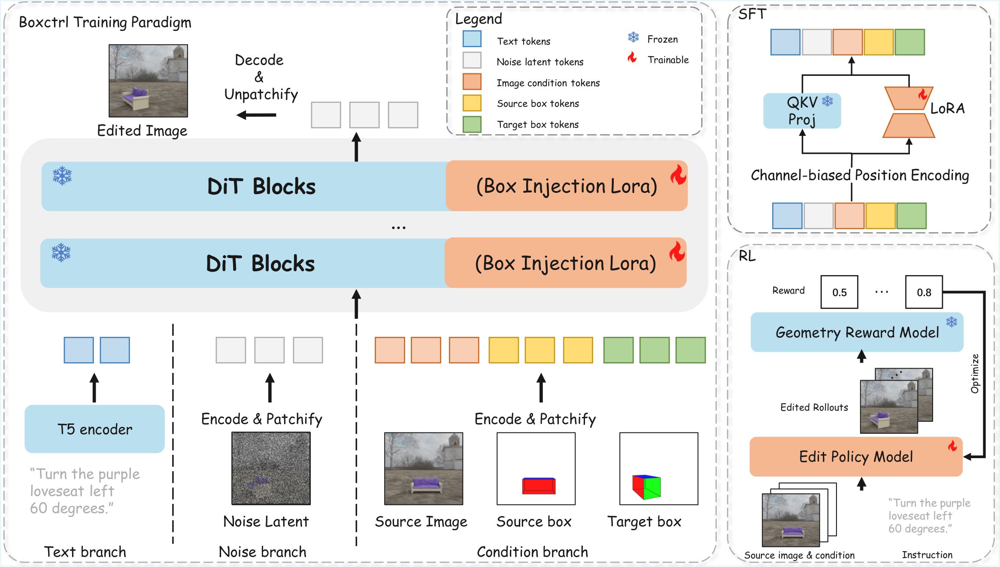

As instruction-based editing models and multimodal large language models advance, diverse image editing tasks have become feasible. However, achieving precise and consistent geometric image editing, such as translating, scaling, and rotating in 3D space, remains a major challenge.
We introduce BoxCtrl, a 3D-aware visual prompting framework. Unlike text-only or coarse 2D-guided approaches, our method introduces informative RGB 3D bounding boxes projected onto 2D images as visual prompts. The three orthogonal faces of each box are painted with distinct RGB colors, simultaneously encoding position, size, and orientation to provide a compact, intuitive in-context visual example. The key to BoxCtrl's success lies in these well-designed bounding boxes, which decouple geometric control from appearance control. This enables the model to learn consistent correspondences between faces of the same color in the latent space, leading to a precise understanding of geometric intentions and accurate editing results.
We introduce a two-stage training paradigm: Supervised Fine-Tuning (SFT) followed by Reinforcement Learning (RL). To address paired data scarcity, we construct a large-scale synthetic dataset for SFT, equipping the model with fundamental editing capabilities. To bridge the synthetic-to-real domain gap, we incorporate an online RL stage leveraging unpaired real-world data. Guided by a reward function evaluating geometric accuracy and visual fidelity, our SFT-RL strategy significantly enhances geometric precision while maintaining photorealistic quality. Extensive experiments demonstrate that BoxCtrl achieves state-of-the-art performance across translation, rotation, scaling, and composite editing tasks.

BoxCtrl uses projected RGB 3D bounding boxes as visual prompts: a source box specifies the original object geometry, while a target box specifies the desired position, scale, and orientation for geometric image editing.
The model is first trained on large-scale synthetic paired data to learn 3D-aware geometric transformations, and then refined with real-world unpaired data using reward signals for geometry accuracy and visual quality to reduce the synthetic-to-real gap.

@misc{wang2026boxctrl3dawarevisualprompting,
title={BoxCtrl: 3D-Aware Visual Prompting for Geometric Image Editing},
author={Feifei Wang and Shiyuan Yang and Xiaoyu Li and Jing Liao},
year={2026},
eprint={2606.23270},
archivePrefix={arXiv},
primaryClass={cs.CV},
url={https://arxiv.org/abs/2606.23270},
}